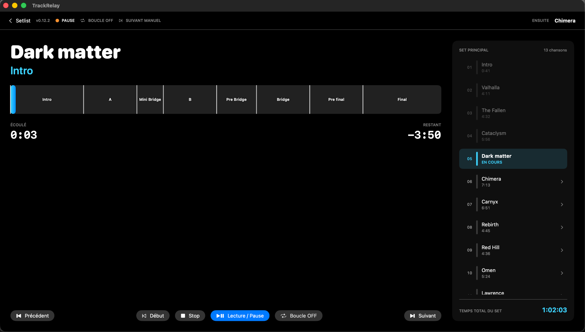
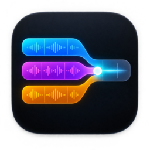
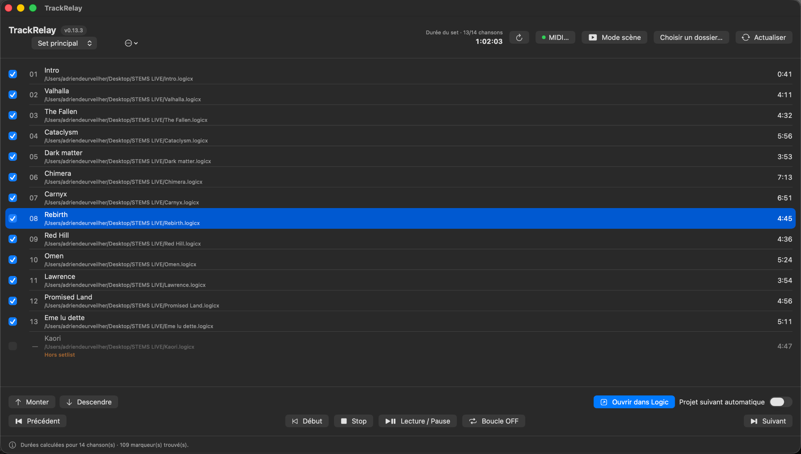
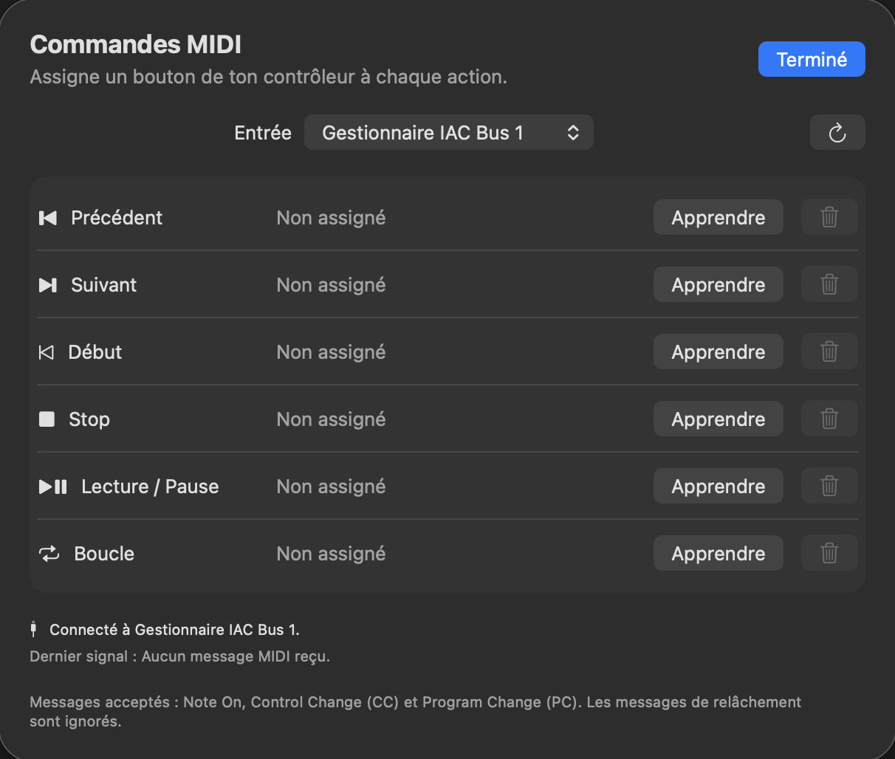
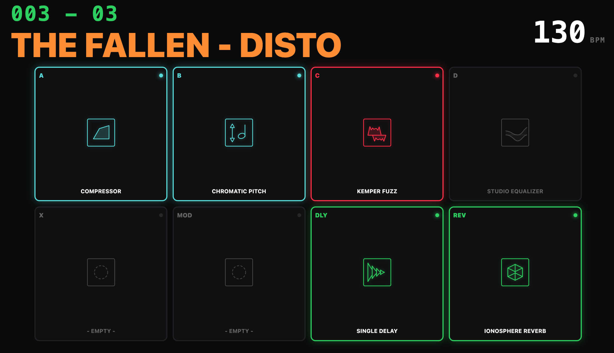
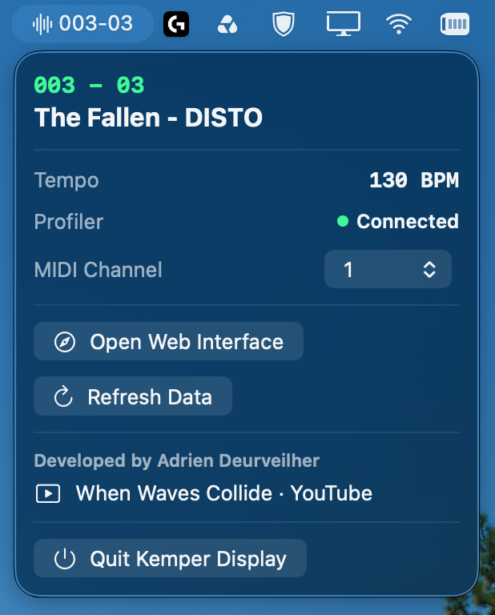
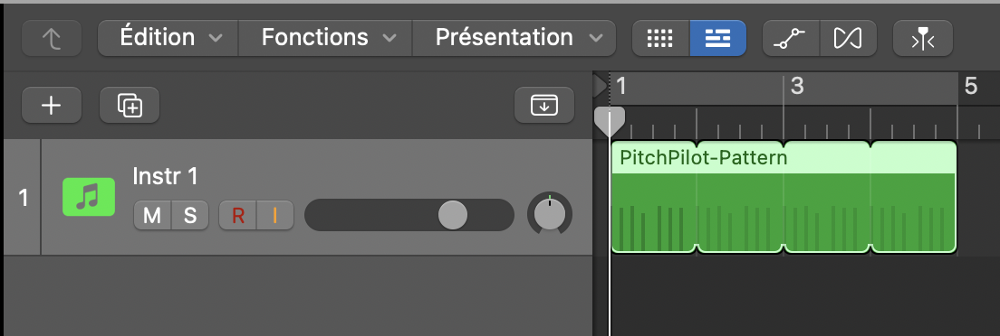
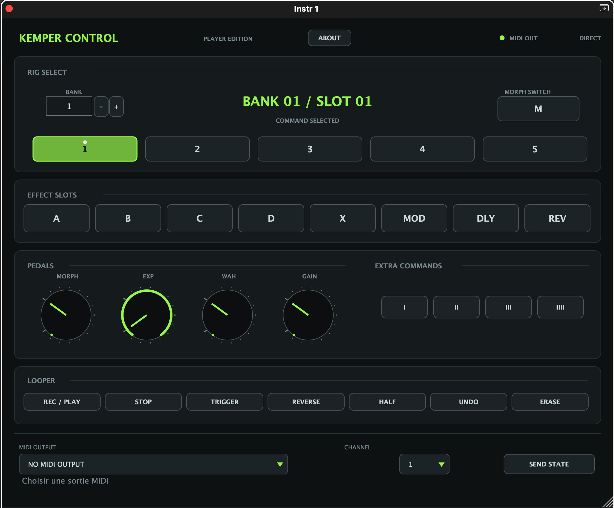

Logic Pro · Kemper Player · Live
Moins de clics.
Plus de musique.
Des outils nés de mes besoins de musicien : préparer un concert, suivre son Kemper et automatiser ses changements de son.
Adrien Deurveilher


01 / Pour la scène
Un projet par morceau.
Un seul endroit pour le live.

TrackRelay organise vos projets Logic Pro en setlists. Ouvrez le bon morceau, pilotez la lecture et gardez une vue claire de votre concert.
Préparez votre set
Plusieurs setlists, ordre des morceaux, inclusion ou exclusion et durée totale. Actualisez le dossier quand vos projets changent.
Gardez le fil sur scène
Le morceau en cours, ses sections, sa progression et les titres à venir dans une vue lisible pendant le concert.
Pilotez au pied
Associez votre contrôleur MIDI à la navigation, au transport et au mode Cycle grâce au MIDI Learn.




macOS 13+ · Logic Pro · Interface français / anglais.
Le suivi de position nécessite le MTC ; le transport nécessite l’autorisation Accessibilité.
02 / Pour le Kemper Player
Le bon son.
En un coup d’œil.
Kemper Display affiche le nom du Rig, la banque, le slot et l’état des effets. Consultez-les depuis le Mac ou gardez l’affichage près de votre pédalier.
- Une application discrète dans la barre de menus du Mac.
- Une interface web pour un téléphone ou une tablette sur le réseau local.
- Un companion iPhone en Bluetooth : le Kemper reste connecté au Mac en USB.


Cette fonction nécessite la version Mac mise à jour et l’app companion iPhone. Les builds Mac et Windows de la release 1.0.0 sont ceux de la version initiale ; consultez les notes de release pour connaître les versions disponibles.
Voir l’application dans la barre de menus du Mac


03 / Pour créer des motifs MIDI
Dessinez une phrase.
Placez-la dans le morceau.
PitchPilot est un séquenceur de pitch synchronisé au tempo pour le Kemper Profiler Player. Créez des motifs d’une à quatre mesures en 4/4 ou en 6/8, puis faites-les glisser dans l’arrangement de votre DAW ou exportez-les en fichier MIDI.
Composez pas à pas
Définissez le pitch de chaque double-croche, sur une plage de −24 à +24 demi-tons. Une mesure compte 16 pas en 4/4 et 12 pas en 6/8.
Construisez l’arrangement
Chaque région MIDI est indépendante : créez des variations et placez-les aux différents moments du morceau.
Préécoutez si besoin
La boucle de préécoute est facultative. Elle est désactivée par défaut pour éviter qu’elle se superpose aux régions MIDI.



macOS 11+ · AU MIDI FX pour Logic Pro · VST3 pour Ableton Live.
Nécessite un effet Transpose dans le slot B du Rig. Le 4/4 et le 6/8 sont pris en charge à partir de PitchPilot 0.7.0 ; vérifiez la version de la release téléchargée.
04 / Pour vos automations
Programmez les changements.
Jouez le morceau.
KemperControlDAW rassemble les commandes MIDI du Kemper Player dans une interface de plugin. Préparez vos changements de Rig, vos effets et votre Morph depuis votre DAW.


Rigs et effets
Sélectionnez les banques et les slots, puis automatisez les modules d’effets aux moments voulus.
Morph et pédales
Retrouvez le Morph Switch, l’expression, la wah et le gain dans la même interface.
Looper et MIDI
Commandez le looper et choisissez votre sortie MIDI et son canal directement dans le plugin.
macOS · Audio Unit / VST3.
Le plugin envoie des commandes MIDI ; il ne lit pas l’état actuel du Kemper.
À vous de jouer
Téléchargements & guides.
Les versions sont distribuées sur GitHub. Chaque page de release donne accès aux fichiers et aux notes de version.
Pour l’installation et la compatibilité, consultez le guide de chaque application. Les outils Kemper sont des projets indépendants, principalement testés avec le Profiler Player.
Derrière les applications
Salut, moi c’est Adrien.
Je suis ingénieur de formation et guitariste dans When Waves Collide. Ces applications sont parties de besoins très concrets : simplifier mes sessions, préparer mes sons et utiliser Logic Pro sur scène.
Elles ont été créées avec l’aide de l’IA, en vibe coding. Je ne suis pas développeur professionnel : je les partage pour qu’elles puissent aussi servir à d’autres musiciens.
Un petit coup de pouce
Offrez-moi un café.
Je partage ces applications gratuitement. Si elles vous sont utiles, vous pouvez m’offrir un café ou faire un don via PayPal. Merci pour votre soutien.
Soutenir le projet sur PayPal